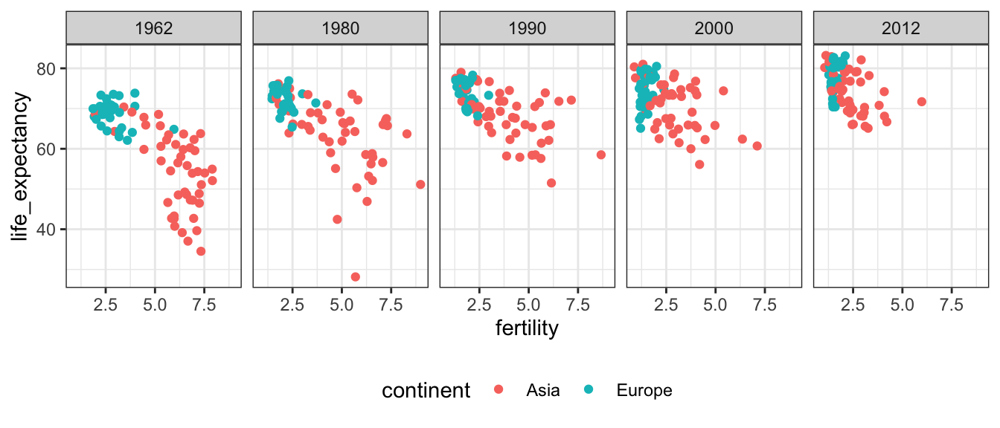
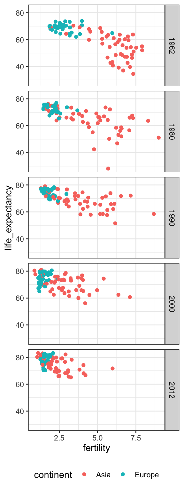
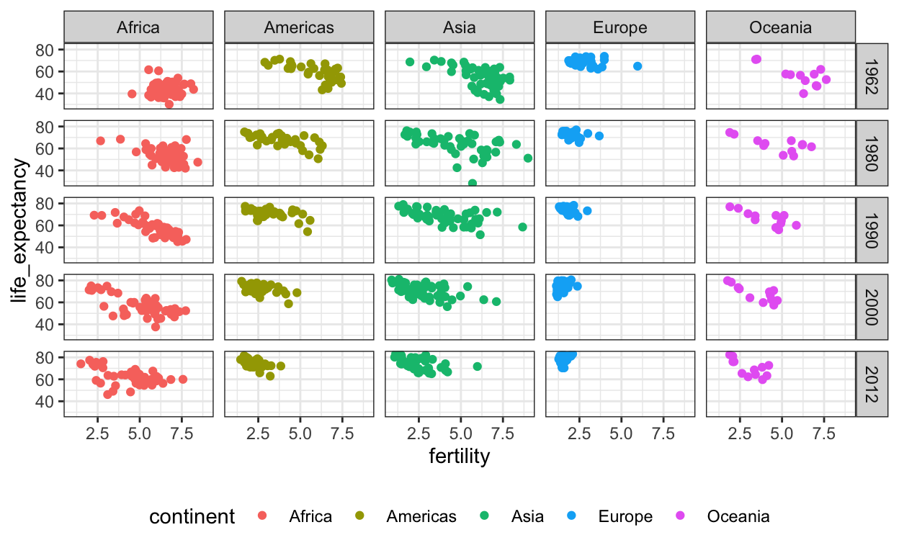
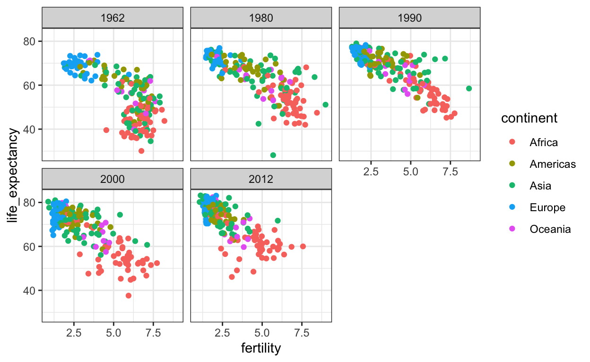
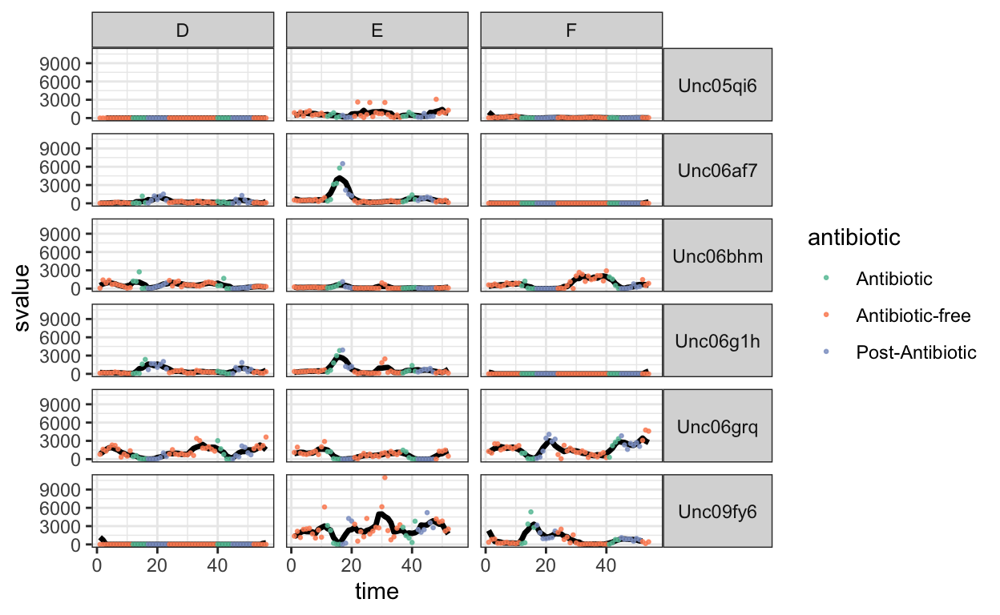
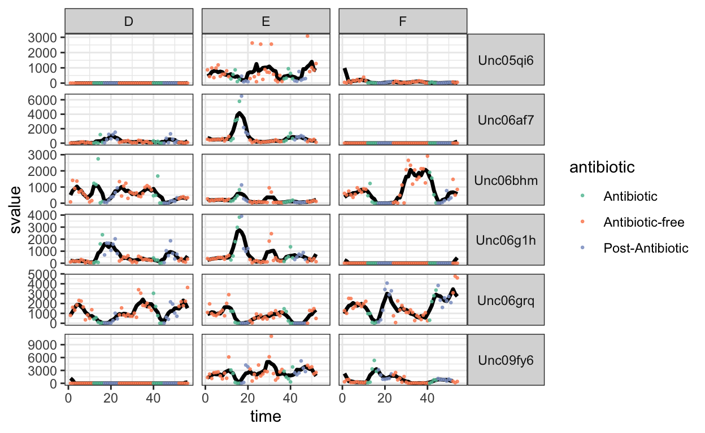
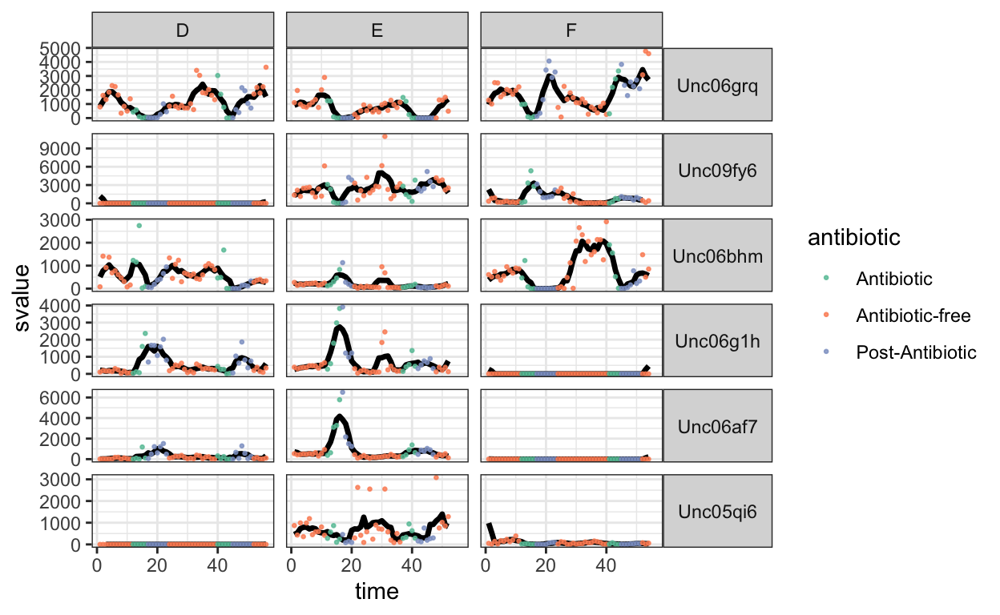

It might seem like we’re limited with the total number of variables we can display at a time. While there are many types of encodings we could in theory use, only a few them are very effective, and they can interfere with one another.
Not all is lost, though! A very useful idea for visualizing high-dimensional data is the idea of small multiples. It turns out that our eyes are pretty good at making sense of many small plots, as long as there is some shared structure across the plots.

Let’s see these ideas in action. These are libraries we need.
In ggplot2, we can implement this idea using the facet_wrap and facet_grid
commands. We specify the column in the data.frame along which we want to
generate comparable small multiples.
years <- c(1962, 1980, 1990, 2000, 2012)
continents <- c("Europe", "Asia")
gapminder_subset <- gapminder %>%
filter(year %in% years, continent %in% continents)
ggplot(
gapminder_subset,
aes(fertility, life_expectancy, col = continent)
) +
geom_point() +
facet_grid(. ~ year) +
theme(legend.position = "bottom")
In facet grid, you specify whether you want the plot to be repeated across rows or columns, depending on whether you put the variable before or after the tilde.
ggplot(
gapminder_subset,
aes(fertility, life_expectancy, col = continent)
) +
geom_point() +
facet_grid(year ~ .) +
theme(legend.position = "bottom")
You can also facet by more than one variable at a time, specifying which variables should go in rows and which should go in columns again using the tilde.
ggplot(
gapminder %>% filter(year %in% years),
aes(fertility, life_expectancy, col = continent)
) +
geom_point() +
facet_grid(year ~ continent) +
theme(legend.position = "bottom")
Sometimes, you just want to see the display repeated over groups, but you don’t
really need them to all appear in the same row or column. In this case, you can
use facet_wrap.
ggplot(
gapminder %>% filter(year %in% years),
aes(x = fertility, y = life_expectancy, col = continent)
) +
geom_point() +
facet_wrap(~ year)
Just to illustrate, faceting makes sense for datasets other than scatterplots.
This example also shows that faceting will apply to multiple geom layers at
once.
The dataset shows the abundances of five different bacteria across three different subjects over time, as they were subjected to antibiotics. The data were the basis for this study.
antibiotic <- read_csv("https://uwmadison.box.com/shared/static/5jmd9pku62291ek20lioevsw1c588ahx.csv")
head(antibiotic)# A tibble: 6 × 7
species sample value ind time svalue antibiotic
<chr> <chr> <dbl> <chr> <dbl> <dbl> <chr>
1 Unc05qi6 D1 0 D 1 NA Antibiotic-free
2 Unc05qi6 D2 0 D 2 NA Antibiotic-free
3 Unc05qi6 D3 0 D 3 0 Antibiotic-free
4 Unc05qi6 D4 0 D 4 0 Antibiotic-free
5 Unc05qi6 D5 0 D 5 0 Antibiotic-free
6 Unc05qi6 D6 0 D 6 0.2 Antibiotic-freeI have also separately computed running averages for each of the variables –
this is in the svalue column. We’ll discuss ways to do this during the week on
time series visualization.
ggplot(antibiotic, aes(x = time)) +
geom_line(aes(y = svalue), size = 1.2) +
geom_point(aes(y = value, col = antibiotic), size = 0.5, alpha = 0.8) +
facet_grid(species ~ ind) +
scale_color_brewer(palette = "Set2") +
theme(strip.text.y = element_text(angle = 0))
It seems like some of the species are much more abundant than others. In this
situation, it might make sense to rescale the \(y\)-axis. Though, this is always
a risky decision – people might easily misinterpret the plot and conclude that
the different species all have the same abundances. Nonetheless, it can’t hurt
to try, using the scale argument to facet_grid.
ggplot(antibiotic, aes(x = time)) +
geom_line(aes(y = svalue), size = 1.2) +
geom_point(aes(y = value, col = antibiotic), size = 0.5, alpha = 0.8) +
facet_grid(species ~ ind, scale = "free_y") +
scale_color_brewer(palette = "Set2") +
theme(strip.text.y = element_text(angle = 0))
Unlike the years example, the facets don’t automatically come with their own
natural order. We can define an order based on the average value of the
responses over the course of the survey, and then change the factor levels of
the Species column to reorder the panels.
species_order <- antibiotic %>%
group_by(species) %>%
summarise(avg_value = mean(value)) %>%
arrange(desc(avg_value)) %>%
pull(species)
antibiotic <- antibiotic %>%
mutate(species = factor(species, levels = species_order))
ggplot(antibiotic, aes(x = time)) +
geom_line(aes(y = svalue), size = 1.2) +
geom_point(aes(y = value, col = antibiotic), size = 0.5, alpha = 0.8) +
facet_grid(species ~ ind, scale = "free_y") +
scale_color_brewer(palette = "Set2") +
theme(strip.text.y = element_text(angle = 0))